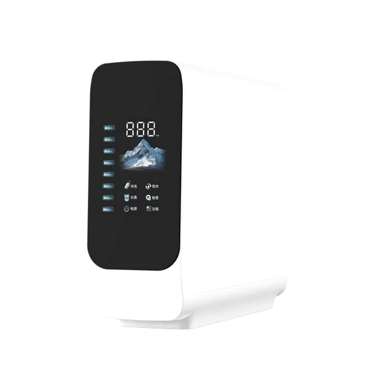
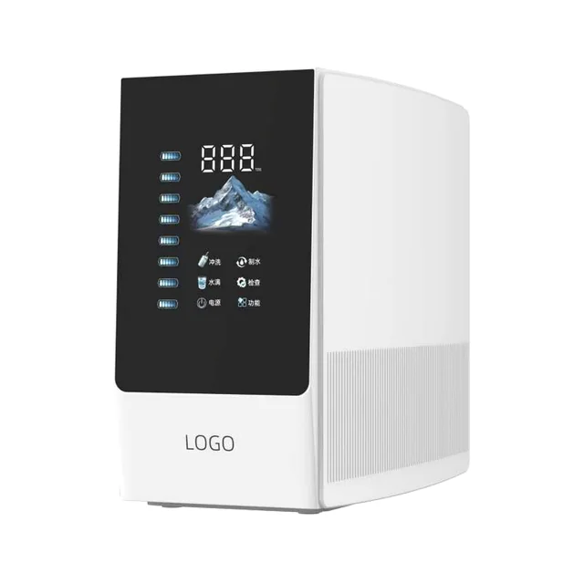
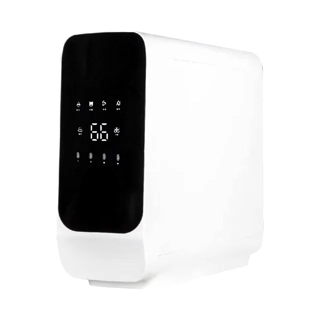
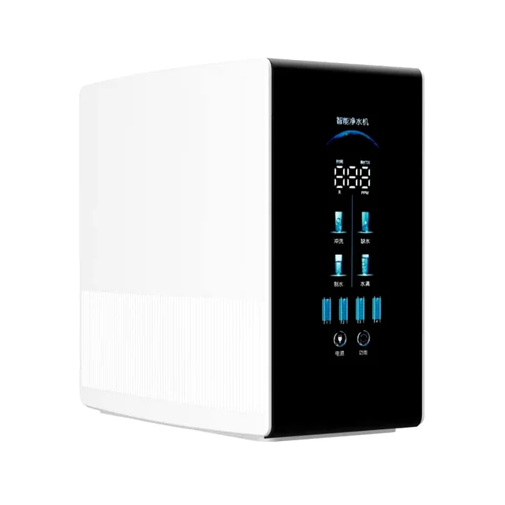
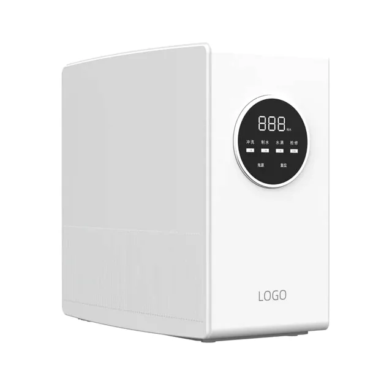

Máy lọc nước RO thông minh 400G-1200G
Máy lọc nước RO thông minhMáy lọc nước RO thông minh 400G-1200G là máy lọc nước thẩm thấu ngược thông minh dành cho các thương hiệu thiết bị gia dụng và nhà phân phối cần các tùy chọn 400G, 600G, 800G hoặc 1200G, hiển thị TDS theo thời gian thực, nhắc nhở về tuổi thọ lõi lọc và khả năng lắp đặt linh hoạt dưới chậu rửa hoặc trên mặt bàn. Các thông số kỹ thuật chính gồm lưu lượng nước tinh khiết: 400G/600G/800G/1200G theo đơn đặt hàng; TDS: Bảng hiển thị cho biết tình trạng chất lượng nước, giá trị TDS và thông tin về tuổi thọ lõi lọc, giúp người dùng lên kế hoạch thay lõi lọc trước khi hiệu suất suy giảm.
Thông số kỹ thuật
Thông số kỹ thuật
| Hạng mục | Thông số |
|---|---|
| Loại sản phẩm | Máy lọc nước RO thông minh 400G-1200G |
| Lưu lượng nước tinh khiết | 400G/600G/800G/1200G theo đơn đặt hàng |
| Ứng dụng | Lắp dưới chậu rửa hoặc đặt trên mặt bàn |
| TDS | Bảng hiển thị cho biết tình trạng chất lượng nước, giá trị TDS và thông tin về tuổi thọ lõi lọc, giúp người dùng lên kế hoạch thay lõi lọc trước khi hiệu suất suy giảm. |
| Quy trình xử lý | Lọc cặn bằng PP + tiền lọc bằng than + màng RO + lọc than sau màng, được điều chỉnh theo dự án |
| Nước cấp | Nước máy đô thị; điều kiện đầu vào được xác nhận trước khi báo giá |
| OEM/ODM | Có thể tùy chỉnh công suất lọc, bơm, màng RO, bộ lõi lọc, màu vỏ, vị trí logo, ngôn ngữ bảng điều khiển, tài liệu hướng dẫn và bao bì cho thị trường mục tiêu. |
Máy lọc nước RO thông minh
Máy lọc nước RO thông minh





Cấu hình hệ thống
Cấu hình hệ thống
Hệ thống RO thông minh nhỏ gọn để lắp dưới chậu rửa hoặc đặt trên mặt bàn, với các tùy chọn công suất lọc từ 400G đến 1200G.
| TDS | Bảng hiển thị cho biết tình trạng chất lượng nước, giá trị TDS và thông tin về tuổi thọ lõi lọc, giúp người dùng lên kế hoạch thay lõi lọc trước khi hiệu suất suy giảm. |
|---|---|
| Tùy chỉnh theo dự án | Có thể tùy chỉnh công suất lọc, bơm, màng RO, bộ lõi lọc, màu vỏ, vị trí logo, ngôn ngữ bảng điều khiển, tài liệu hướng dẫn và bao bì cho thị trường mục tiêu. |
| Ứng dụng | Nhà bếp gia đình, căn hộ, văn phòng, các chương trình của nhà phân phối và thiết bị gia dụng mang nhãn hiệu riêng |
| Yêu cầu báo giá OEM | Gửi thông tin về công suất lọc yêu cầu, điện áp, nguồn nước, kiểu lắp đặt, logo, ngôn ngữ bảng điều khiển, bao bì và thị trường mục tiêu để đánh giá. |
Câu hỏi thường gặp
Câu hỏi thường gặp
400G/600G/800G/1200G theo đơn đặt hàng
Bảng hiển thị cho biết tình trạng chất lượng nước, giá trị TDS và thông tin về tuổi thọ lõi lọc, giúp người dùng lên kế hoạch thay lõi lọc trước khi hiệu suất suy giảm.
Có thể tùy chỉnh công suất lọc, bơm, màng RO, bộ lõi lọc, màu vỏ, vị trí logo, ngôn ngữ bảng điều khiển, tài liệu hướng dẫn và bao bì cho thị trường mục tiêu.
Lưu ý cho bên mua máy lọc nước RO thông minh 400G-1200G
Đối với máy lọc nước RO thông minh 400G-1200G, hãy chọn model này khi bên mua cần cấu hình máy lọc nước được xác định rõ, các chi tiết lắp đặt thực tế, kế hoạch chuẩn bị lõi lọc thay thế và kiểm soát thùng carton xuất khẩu. Trang sản phẩm nên giải đáp cách tích hợp thiết bị vào nhà bếp, văn phòng hoặc chương trình cấp nước uống phục vụ mục đích thương mại trước khi lặp lại các tuyên bố chung chung về RO hoặc OEM.
Thông tin cần xác nhận
- Nhu cầu sử dụng hằng ngày dự kiến và công suất yêu cầu
- Các cấp lọc và bộ lõi lọc thay thế
- Yêu cầu về tủ máy, bảng điều khiển, vòi và bao bì
- Tài liệu cho thị trường đích và việc ghi nhãn thùng carton
Lưu ý lựa chọn dành cho người mua
Chọn máy lọc nước RO thông minh 400G-1200G khi tìm nguồn cung cho nền tảng máy lọc nước RO thông minh 400G-1200G phục vụ các chương trình sản phẩm dành cho nhà bếp hiện đại. Các điểm so sánh hữu ích gồm công suất lọc của màng, độ chính xác của hiển thị TDS, logic nhắc nhở về tuổi thọ lõi lọc, không gian lắp đặt, khả năng tiếp cận lõi lọc để thay thế và thiết kế đồ họa bảng điều khiển cho nhãn hiệu riêng.
Các chi tiết cần xác nhận trước khi báo giá
- Công suất lọc mục tiêu 400G, 600G, 800G hoặc 1200G
- Hiển thị TDS, nhắc nhở về tuổi thọ lõi lọc và ngôn ngữ bảng điều khiển
- Không gian lắp đặt máy lọc nước RO dưới chậu rửa hoặc trên mặt bàn
- Logo, màu vỏ, bộ lõi lọc và thiết kế đồ họa thùng carton xuất khẩu
Yêu cầu báo giá OEM
Gửi thông tin về công suất lọc yêu cầu, điện áp, nguồn nước, kiểu lắp đặt, logo, ngôn ngữ bảng điều khiển, bao bì và thị trường mục tiêu để đánh giá.